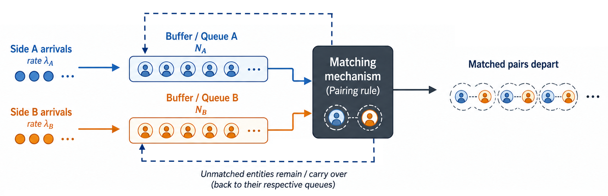
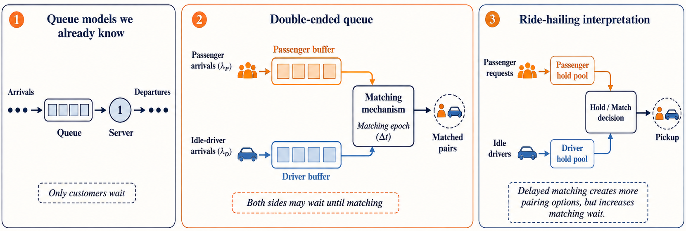

Double-ended queue
Start from course queues and introduce a general two-sided matching queue.
Transportation Research Part C · 2021
A queueing-theory interpretation of delayed matching controlled by reinforcement learning
Presented by
Roadmap
Start from course queues and introduce a general two-sided matching queue.
Map each concept to familiar queueing models and identify the differences.
Show where double-ended queues appear before focusing on ride-hailing.
Model passengers and idle drivers as a double-ended queue with delayed matching.
Explain matching wait, pickup wait, total wait cost, and the U-shaped trade-off.
Argue why one fixed \(\Delta t\) is not enough and why adaptive control is needed.
Course starting point
Customers arrive, join a line, and receive service from a fixed set of servers.
The state is often summarized by the number of customers waiting or present in the system.
Some systems need two different entity types to meet before anything can be served.
Generic model
A double-ended queue is a queueing system in which two different entity types arrive over time, wait in separate buffers, and leave the system only after a compatible pair is formed by a matching rule.

Mechanism
Type A arrives with \(\lambda_A\); Type B arrives with \(\lambda_B\).
Unmatched entities remain in buffers \(N_A(t)\) and \(N_B(t)\).
A departure occurs only when one entity from each side is paired.
Unmatched entities stay in the system and influence the next state.
Closest course analogy
So the double-ended queue is still a queueing model, but it generalizes the familiar \(M/M/m\) intuition to a setting where pairing, not ordinary service, drives departures.
Key differences
In standard queues, waiting is usually one-sided. Here, both sides may accumulate and affect future matches.
Entities leave only when a compatible pair is formed, not when an individual customer finishes service.
The “service side” is itself random and time-varying because it also arrives as a queueing process.
The main design choice becomes when and how to match, which makes delayed matching operationally meaningful.
Applications
Buyers and sellers wait until compatible trades can be formed.
Applicants and vacancies form two waiting sides before a suitable match occurs.
Two participant groups may wait so that the platform can improve match quality.
Donors and recipients are matched only when compatibility constraints are satisfied.
Service requesters and providers enter separate pools before pairing.
Passenger requests and idle drivers form the two sides of the queue.
Ride-hailing application

Passenger requests accumulate on one side of the system and may be held before pairing.
Idle drivers accumulate on the other side and provide the available matching supply.
The platform chooses whether to match now or delay matching to create more pairing options.
Operational problem

Matching wait is small, but the selected driver may be far from the passenger.
A larger buffer gives more pairing choices and can reduce pickup distance.
Paper Fig. 1.
Evaluation metrics
Time from request arrival until a passenger-driver match is formed.
Time from matching until the assigned driver reaches the passenger.
The paper minimizes wait cost, or equivalently maximizes the corresponding wait reward.
A shorter queue alone is not enough; the platform must balance the uncertainty before matching against the travel time after matching.
Uncertain pre-match waiting is usually valued more negatively than pickup waiting.
Trade-off curve

Waiting longer before matching directly increases matching delay.
A thicker pool can create closer or better passenger-driver pairs.
An interior optimum appears only when the pickup-wait reduction initially outweighs the added matching delay.
Paper Fig. 2.
Stationary benchmark

If \(\lambda_P\) and \(\lambda_D\) are stable, historical data can be used to find a fixed interval.
A fixed interval gives a strong baseline, but it assumes the best timing does not change across states.
Paper Fig. 3.
From stationary to real operations
If arrival rates and spatial patterns remain stable, a fixed matching interval can be optimized once.
Demand, supply, locations, and carryover change across time and grids, so the best interval changes too.
Adaptive control motivation
The platform repeatedly chooses Hold or Match over time.
Today’s decision changes tomorrow’s queue populations.
The state includes grid-level passenger and driver buffers, locations, and forecasts.
The transition probabilities and rewards are not analytically available in practice.
Queueing simulator

New arrivals and unmatched participants remain in the queueing buffers for the next decision epoch.
Hold preserves the current batch; Match releases the available participants to the assignment stage.
A global bipartite assignment pairs passengers and drivers to reduce pickup time; unmatched participants carry over.
Paper Fig. 4.
Position in the literature
They explain how arrival rates, waiting buffers, matching epochs, and service capacity shape system behavior.
Their weakness is that they usually rely on stationary or simplified assumptions.
It can learn a matching policy from simulated trajectories when the state is large and transition dynamics are difficult to model exactly.
The queueing simulator supplies the structured environment in which that policy is trained.
Spatially dependent control

All grids with action \(1\) form subarea \(S_1\) and participate in a global match. Grids with action \(0\) remain in \(S_0\).
Paper Fig. 5.
Global matching stage
\(T_{ij}\) is the pickup time from driver \(i\) to passenger \(j\), estimated from Manhattan distance and speed \(v\).
The cost matrix is padded to \(n=\max(N_D,N_P)\) using a large value \(M\).
Unmatched passengers and drivers return to the buffer and influence the next state.
RL decides when and where; optimization decides who matches with whom.
Sequential decision model
The complete state would also contain exact request details, driver locations, timestamps, and future demand information.
Learning mechanisms
Adjust \(\pi_\theta(a\mid s)\) in the direction of higher expected return.
Uses sampled future return \(G(t)\) to update the policy, with high variance.
The Actor selects actions; the Critic estimates long-run value and enables bootstrapping.
Reuses experience to improve sample efficiency and stabilize training.
Conceptual architecture
Implementation adaptations
A one-dimensional action ID is mapped to a multi-binary Hold/Match matrix with up to \(2^{|S|}\) schemes.
Previously sampled transitions are reused, increasing sample efficiency and reducing step-wise correlation.
Episode time limits are not treated as true terminal states, preventing biased value updates.
Reward-design challenge

When the action is Hold, the immediate reward can remain zero while matching produces a negative waiting cost.
The agent struggles to connect a long sequence of Hold actions to a distant eventual cost.
Spread matching and pickup waiting penalties across the passenger's queueing lifetime.
Paper Fig. 6.
Queue-aware objective
\(R_m\) penalizes every extra step spent waiting for a match. \(R_p\) credits or penalizes the change in expected pickup cost caused by holding or matching.
Real-world data

One week of trip, trajectory, and operational-status records.
Taxi ID, time, location, speed, bearing, and occupied/idle status.
The area inside the Outer Ring Road captures more than \(80\%\) of trips.
Six-grid control balances spatial detail and action dimensionality.
Paper Fig. 8.
Training protocol

Paper Fig. 9.
Empirical queue behavior

Total wait cost is U-shaped: pickup savings initially exceed the added matching delay.
Total wait generally rises with the interval; instantaneous matching is preferred.
Paper Fig. 10.
Algorithm comparison

The best historical fixed interval yields a total wait cost near \(371.20\) hours.
Converged performance is comparable to the fixed baseline.
Only the \(1\times2\) case converges, at roughly \(380\) hours.
Paper Fig. 11.
Performance table
| Strategy | Matching wait | Pickup wait | Total wait |
|---|---|---|---|
| Instantaneous | \(3.01\,\mathrm{s}\) | \(675.71\,\mathrm{s}\) | \(678.72\,\mathrm{s}\) |
| Optimal fixed interval | \(21.20\,\mathrm{s}\) | \(525.69\,\mathrm{s}\) | \(546.89\,\mathrm{s}\) |
| ACER \((3\times2)\) | \(26.95\,\mathrm{s}\) | \(513.22\,\mathrm{s}\) | \(540.17\,\mathrm{s}\) |
ACER waits longer before assignment.
A thicker pool produces much closer matches.
The pickup saving dominates the matching delay.
ACER achieves the lowest reported mean total wait in Table 1 and performs on par with the historically optimized fixed baseline.
Across times and days

ACER stays close to the fixed baseline in total waiting cost.
The learned delayed policy is less suitable because near-instantaneous matching is already preferable.
Paper Fig. 12.
Episodic policy interpretation

Selected when \(N_D\gg N_P\) or \(N_P\gg N_D\), especially when arrival rates are low or stable.
Selected when \(N_D\approx N_P\) and \(\lambda_P,\lambda_D\) are sufficiently high to create valuable alternatives.
Different grids follow different time-varying probabilities because queue populations and arrival rates evolve differently.
Paper Fig. 13.
Model limitations
A fixed patience threshold is used rather than heterogeneous behavior.
Idle drivers remain in their current grids instead of repositioning.
Drivers are assumed to remain active and do not leave the system.
The model excludes ride-pooling and the associated matching-queue structure.
The policy learns in a simulator rather than through live platform interaction.
Exact network layer sizes and activations are not specified in the paper.
Future directions
Quantify when the supply-demand state justifies delayed matching.
Switch between instantaneous and delayed matching using occupancy and passenger utility.
Model driver repositioning, departures, heterogeneous patience, and ride-pooling.
Learn from real-time dynamics while managing stochasticity, instability, and weak convergence guarantees.
Conclusion
Balanced and active supply-demand states create the strongest opportunity for delayed matching.
RL adapts the matching epoch across space and time while assignment optimization handles pair selection.
ACER with \(3\times2\) grids reduces mean total wait by \(20.41\%\) versus instantaneous matching.
Match immediately
Use controlled delay
Queueing Theory · Ride-Hailing Matching